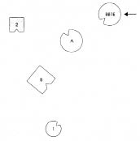

Dizim: Baba evlilik dışı, babanın babası dışlanmış
WILHELM Kimi almam gerekiyor?
HELLINGER Baba, anne, çocuklar. Daha önce evli ya da nişanlı olan var mıydı ya da ölen bir çocuk?
WILHELM Hayır.
HELLINGER Başka bir eksik var mı?
WILHELM Dediğim gibi, babamın babası bir tabuydu.
HELLINGER O konuda bekleyelim bakalım. Önce çekirdek aileyi diziyoruz.
Wilhelm ailesini dizmeye başladığında kendisini temsil eden kişiyi önce babasının karşısına, sonra uzağa yerleştirir.
1. Resim
B Baba
A Anne
1 İlk çocuk, kız
2 İkinci çocuk, oğul (=Wilhelm)
HELLINGER Annenle baban boşanmış mı?
WILHELM Hayır, değil.
HELLINGER Annenin ailesinde neler olmuş? Özel bir şey var mı? Ölmüş birisi?
WILHELM Büyükbabanın ilk karısı ilk çocuğun doğumunda ölmüş, büyükbaba yeniden evlenmiş, ikinci karısından üç çocuğu daha olmuş, annem ve iki teyzem.
HELLINGER Büyükbabanın ilk karısı en önemli kişi. Onu hemen dizime katalım.
2. Resim

BB1E Büyükbabanın ilk eşi, doğum sırasında ölmüş.
HELLINGER Baba nasıl?
BABA Kendimi burada biraz yitik hissediyorum.
HELLINGER Gruba Bir aile bireyler birbirlerinden olabildiğince uzaklaştırılmaya çalışılarak diziliyorsa daha iyisi yapılamazdı.
Anne nasıl?
ANNE Başlangıçta kendimi ölü gibi hissettim.
HELLINGER Babanın ilk karısıyla özdeşleşme bu.
ANNE Bu tarafta kocayla bir parça ilinti var hâlâ aramda. Oğul önüme yerleştirildiğinde hiç değilse bir parça ilişki vardı.
HELLINGER Kız nasıl?
İLK ÇOCUK İyi değil, kötü de değil.
HELLINGER Wilhelm’in temsilcisine Oğul nasıl?
İKİNCİ ÇOCUK Büyükbabanın ilk karısı ortaya çıkana dek kendimi çok az yaşıyormuş gibi hissettim, o kadar ki hâlâ hayatta mıyım, bilemeyecek kadar. Kimseyle hiçbir ilişki hissetmedim. İlk karısı geleli o tarafa doğru hafif, sıcak bir eksen var.
ANNENİN BABASININ İLK KARISI Kızgın olduğumu hissediyorum ve kadına saldırıyorum. Önemliyim.
BABA Başta, sistem oluşurken dudaklarım çok ısındı ve karıma gitmek istedim. Bu giderek kayboldu, şimdi hiç yok.
HELLINGER Wilhelm’e Şimdi babanın babasını da yerleştireceğim.
Hellinger resmi değiştirerek babanın babasını da ekler.
3. Resim
BB Babanın babası
BABA şimdi daha iyi. Daire şeklinde bir şey var artık.
HELLINGER Doğru.
Kıza Sende bir şey değişti mi?
İLK ÇOCUK Evet, daha güzel oldu.
HELLINGER Anne nasıl?
ANNE Ölmüşken dirildim.
HELLINGER Wilhelm’in temsilcisine Sen nasılsın?
İKİNCİ ÇOCUK İyi.
ANNENİN BABASININ İLK KARISI Kadının sırtının çevrilmesini kabul etmeyeceğimi düşünmüştüm ama daha fazlasını hoş karşılamayacağım. Güler. Ben iyiyim. Bu kadın benim için önemli, geri kalanlar o kadar önemli değil.
HELLINGER Anne şimdi nasıl?
ANNE Öncekinden çok daha iyi ama hâlâ çok uzakta ve yalnız.
BABA Karımla aramdaki bu uzaklık iyi. Şimdi doğru yöne bakıyor olması önemli.
BABANIN BABASI Öndeki o ikisini seviyorum, oğlum ve torunumu. Solumdaki kız torunum ise güzel bir şey. Ama her şeyden önce oğluma ve erkek torunuma yöneliyorum.
İKİNCİ ÇOCUK Babama şimdiki kadar yakın olmama gerek yok. Büyükbaba benim için çok önemli. O ortaya çıktığında birden nereye yöneleceğimi bildim.
HELLINGER Wilhelm’e İyi örnek o.
IDA (Wilhelm’in karısı) İşadamıydı.
HELLINGER İşadamı mıydı? Bir bu eksikti.
Grupta gülüşmeler.
4. Resim

BABA Daha önce daha sıcaktı. Şimdi kaşımda oğlum var ve bunu kabul etmek zorundayım. Bir de bir şey kaybettim.
İKİNCİ ÇOCUK Yine bir titreme geçirdim ve içimde bunun iyi olduğuna dair bir his var. Babanın yanında olmaktan çok daha iyi.
HELLINGER Wilhelm’e Ebeveynleşmişsin. Yani baban için onun babasını temsil ediyorsun. Bu nedenle konumlarınız birbiriyle değiştirilebilir haldeydi.
Anneye Sende şimdi bir değişiklik oldu mu?
ANNE Çocuklara artık bakabilir olmayı güzel buluyorum.
BABA Karımın bu kadar yakın olmasına alışamadım. Ama bunu böylece alabiliyorum.
5. Resim
AB Annenin babası
AA Anneanne
HELLINGER Temsilcilere Şimdi nasılsınız?
ANNE İyi.
BABA İyi. Bütün. Şimdi dengede. Artık yanımdaki kadını da iyi alabiliyorum. Daha önce bir rahatsızlık vardı.
İKİNCİ ÇOCUK Her iki ebeveyni birbirlerine bu kadar yakın görmek çok tuhaf. Durum bana kuşkulu görünüyor.
BABANIN BABASI Torunlarla aramdaki yolun açık olması ve oğlumu burada hissetmek, açık seçik algılamak benim için iyi. Kadınlar tarafı açıkçası beni hiç ilgilendirmiyor. O tarafa baktığımda korku duydum.
HELLINGER Wilhelm’e Yerine geçmek ister misin?
WILHELM Memnuniyetle.
HELLINGER Gruba Buradaki dinamik üzerine bir şey söylemek istiyorum. Bir kadın çocuk doğururken öldüğünde bu sistemde bedeli ödenmesi gereken bir cinayet gibi deneyimlenir. Daha sonra dünyaya gelen oğullardan birinin bu durumda ölmesine sık rastlanır. Burada bu Wilhelm olacaktı. Kurban olduğu duygusunun nedeni bu. Bu kadın onurlandırılmasa tehlikede olacaktı.
Wilhelm’e Anne tarafında yer almaktansa baba tarafında durman senin için daha güvenli. Babanın babası seni bu kötü kilitlenmeden çekip alıyor ve güvenlik sağlıyor.
Pekâlâ, bu kadar.